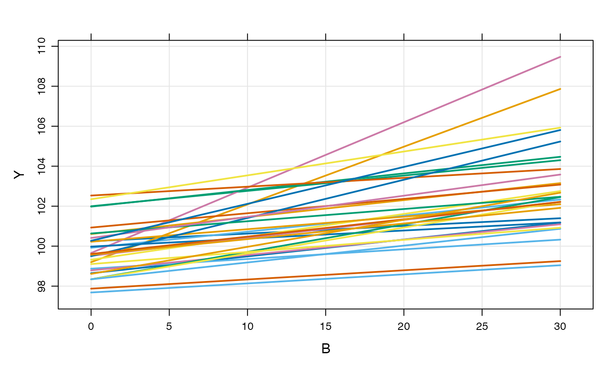
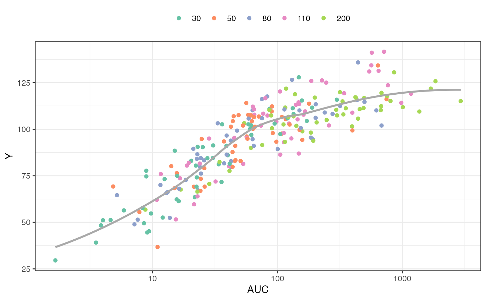

This vignette introduces a new formal code block for writing models where there are no compartments. The block is named after the analogous NONMEM block called $PRED. This functionality has always been possible with mrgsolve, but only now is there a code block dedicated to these models. Also, a relaxed set of data set constraints have been put in place when these types of models are invoked.
As a most-basic model, we look at the pred1 model in modlib()
mod <- modlib("pred1")The model code is
$PROB
An example model expressed in closed form
$PARAM B = -1, beta0 = 100, beta1 = 0.1
$OMEGA 2 0.3
$PRED
double beta0i = beta0 + ETA(1);
double beta1i = beta1*exp(ETA(2));
capture Y = beta0i + beta1i*B;This is a random-intercept, random slope linear model. Like other models in mrgsolve, you can write parameters ($PARAM), and random effects ($OMEGA). But the model is actually written in $PRED.
When mrgsolve finds $PRED, it will generate an error if it also finds $MAIN, $TABLE, or $ODE. However, the code that gets entered into $PRED would function exactly as if you put it in $TABLE.
In the example model, the response is a function of the parameter B, so we’ll generate an input data set with some values of B
.
[38;5;246m# A tibble: 6 × 2
[39m
. ID B
.
[3m
[38;5;246m<dbl>
[39m
[23m
[3m
[38;5;246m<dbl>
[39m
[23m
.
[38;5;250m1
[39m 1 5.61
.
[38;5;250m2
[39m 1 0.749
.
[38;5;250m3
[39m 1 0.322
.
[38;5;250m4
[39m 1 0.150
.
[38;5;250m5
[39m 1 2.06
.
[38;5;250m6
[39m 1 4.06
Like other models, we can simulate from a population
.
[38;5;246m# A tibble: 6 × 2
[39m
. ID B
.
[3m
[38;5;246m<int>
[39m
[23m
[3m
[38;5;246m<dbl>
[39m
[23m
.
[38;5;250m1
[39m 1 0
.
[38;5;250m2
[39m 1 1
.
[38;5;250m3
[39m 1 2
.
[38;5;250m4
[39m 1 3
.
[38;5;250m5
[39m 1 4
.
[38;5;250m6
[39m 1 5
Here is an implementation of a PK/PD model using $PRED
In this model
CL as a function of WT and a random effectAUC from CL and DOSE
Y) is a calculated from AUC and the Emax model parameters
code <- '
$PARAM TVCL = 1, WT = 70, AUC50 = 20, DOSE = 100, E0 = 35, EMAX = 2.4
$OMEGA 1
$SIGMA 100
$PRED
double CL = TVCL*pow(WT/70,0.75)*exp(ETA(1));
capture AUC = DOSE/CL;
capture Y = E0*(1+EMAX*AUC/(AUC50+AUC))+EPS(1);
'
mod <- mcode_cache("pkpd", code)To simulate, look at 50 subjects at each of 5 doses
set.seed(8765)
data <-
expand.idata(DOSE = c(30,50,80,110,200), ID = 1:50) %>%
mutate(WT = exp(rnorm(n(),log(80),1)))
head(data). ID DOSE WT
. 1 1 30 39.67626
. 2 2 50 36.27156
. 3 3 80 60.14424
. 4 4 110 81.59561
. 5 5 200 22.10396
. 6 6 30 126.69565. ID time WT DOSE AUC Y
. 1 1 0 39.67626 30 298.76467 115.82635
. 2 2 0 36.27156 50 108.78989 97.65895
. 3 3 0 60.14424 80 13.74925 52.41350
. 4 4 0 81.59561 110 186.47672 125.92038
. 5 5 0 22.10396 200 494.49076 116.76226
. 6 6 0 126.69565 30 22.61341 74.10551Plot the response (Y) versus AUC, colored by dose
ggplot(out, aes(AUC, Y, col =factor(DOSE))) +
geom_point() +
scale_x_log10(breaks = 10^seq(-4, 4)) +
geom_smooth(aes(AUC,Y), se = FALSE, col="darkgrey") + theme_bw() +
scale_color_brewer(palette = "Set2", name = "") +
theme(legend.position = "top")